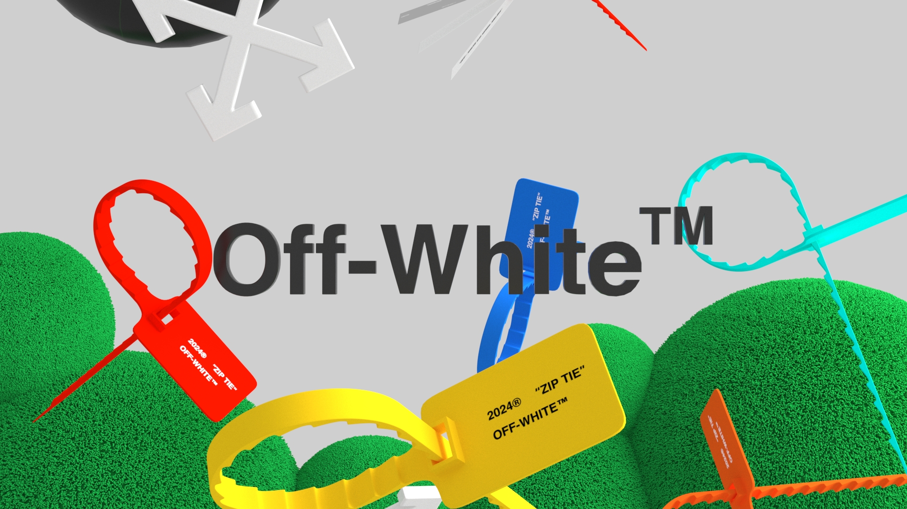
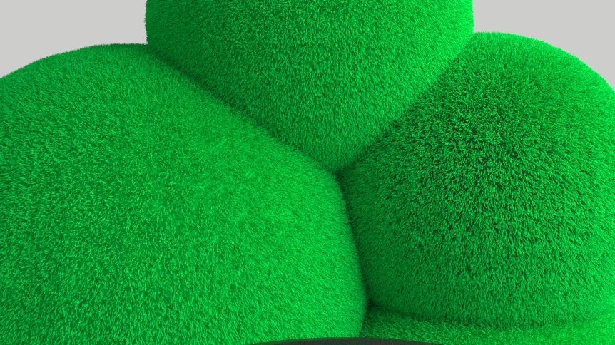
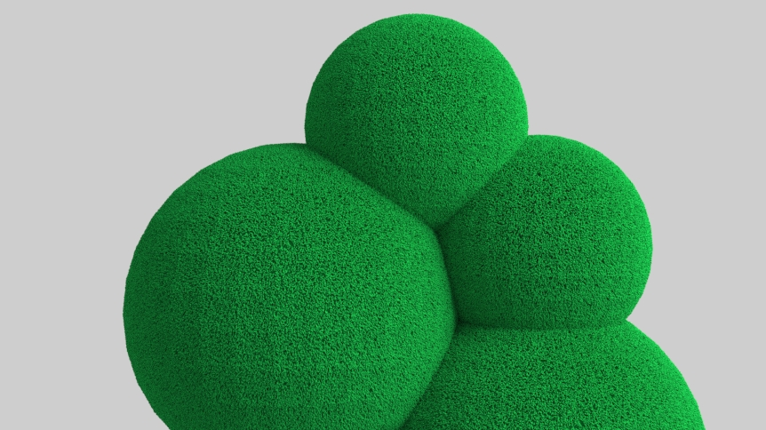
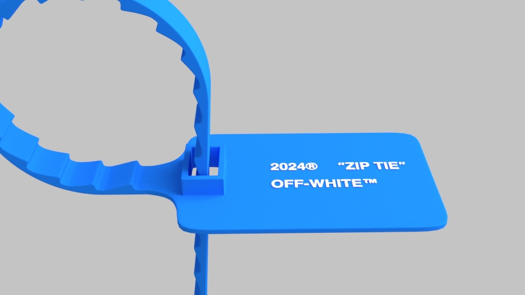
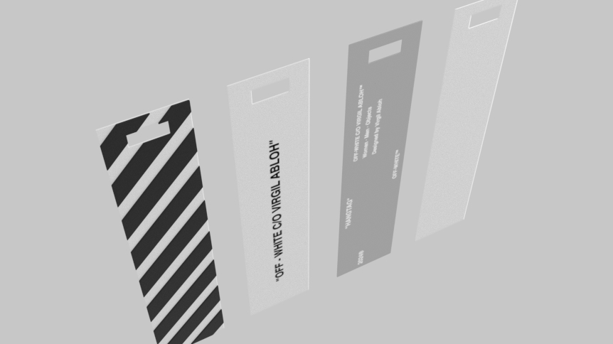
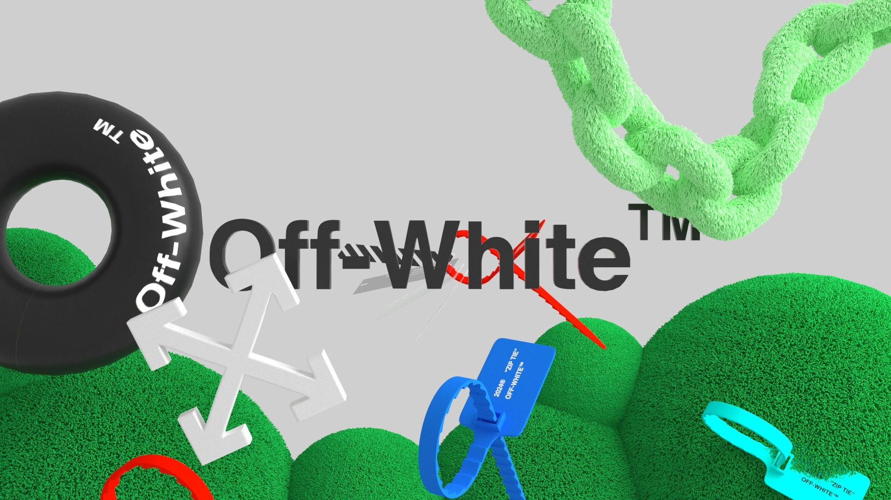
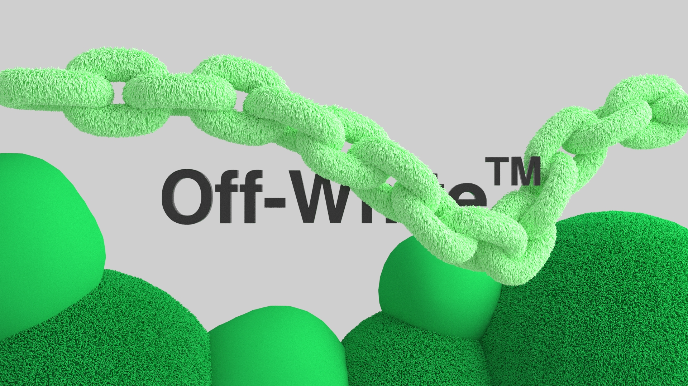
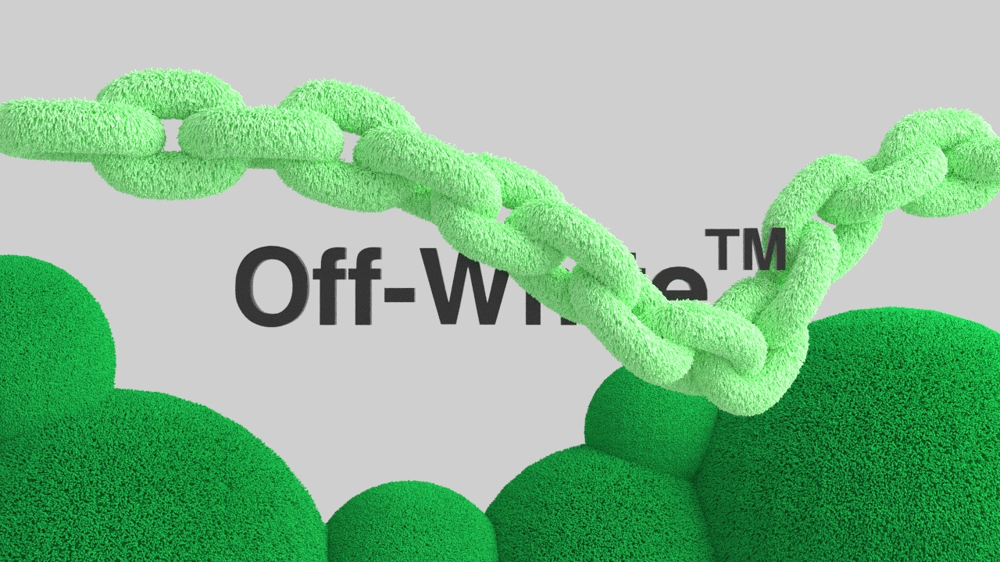
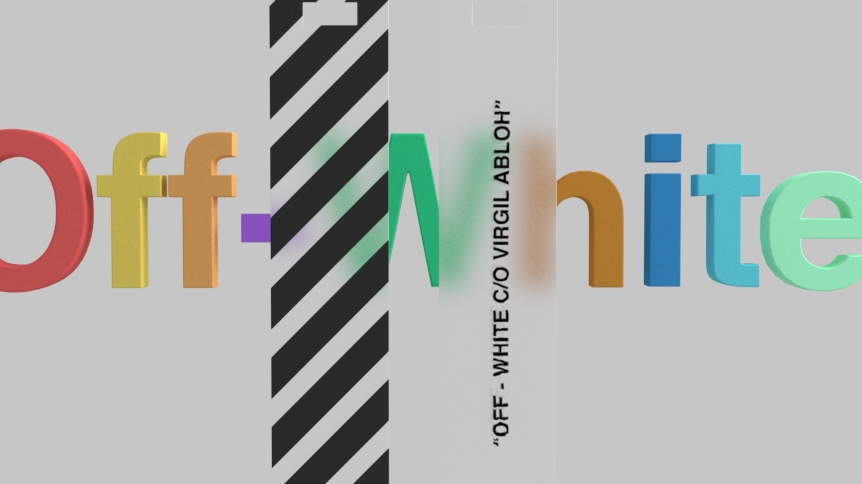
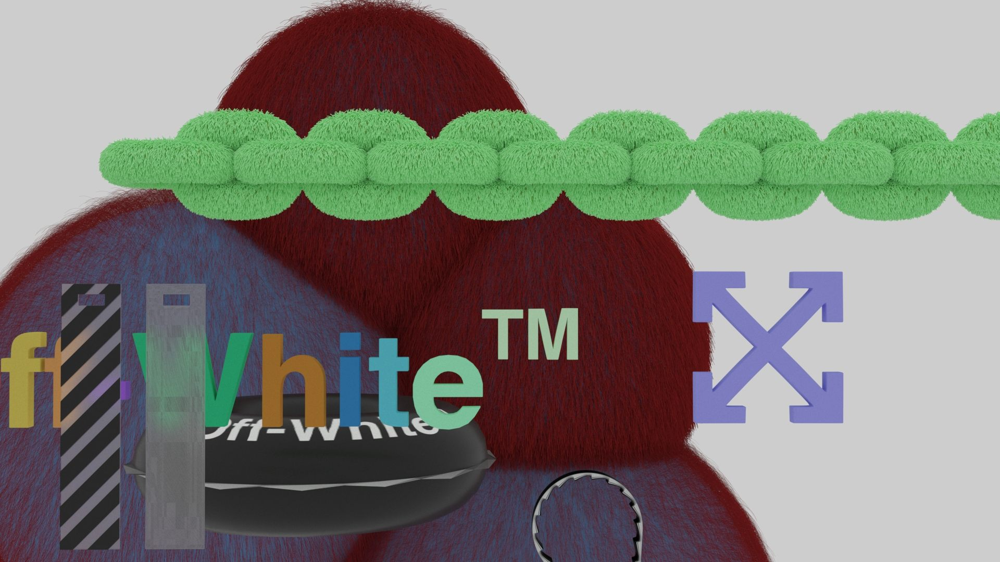

3D Animation — Off-White

Role
3D modelling, Animation, Textures, Video editing
Type
University project · Unofficial brand concept
Year
2024
Tools
3ds Max, Illustrator, Photoshop, Premiere Pro
A 3D advertising animation for Off-White, built around the brand's own visual language. Every object, texture, colour and movement in the scene was chosen to stay consistent with Off-White's aesthetic, so the piece reads as the brand from the first frame.


The set. The animation opens on the Off-White name, placed at the centre of a round patch of artificial grass.
The brand's signature objects. As the animation progresses, Off-White's signature elements rise into the frame from below: the zip-tie tag, the logo and the labels. Once they appear, they keep floating upwards continuously.




Movement with contact. The objects don't just drift past the name. They interact with it, gently bumping into it on their way up.
From flat assets to final cut. The brand graphics were prepared in Illustrator and Photoshop, then modelled, textured and animated in 3ds Max. The final sequence was edited in Premiere Pro.




The project brought together 3D modelling, texturing, animation and editing in a single brand piece, where the setting, the props and the motion all come from Off-White's own vocabulary.